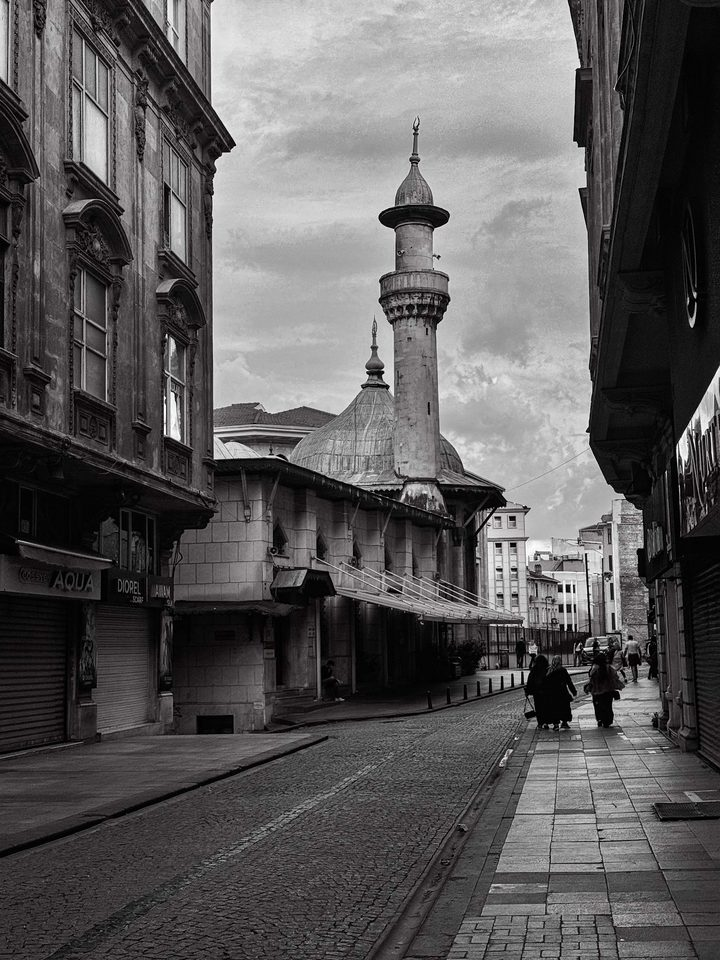
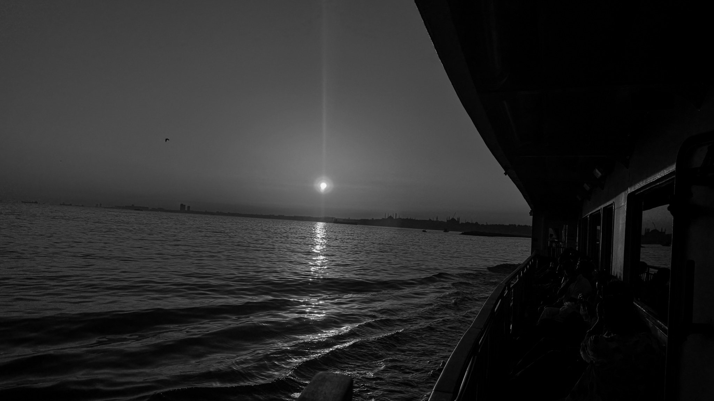
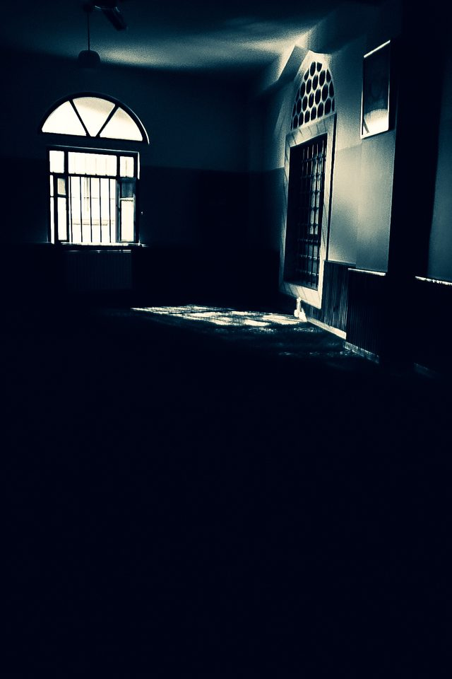

Şehrin Sessizliği
Arnavut taşların kapladığı ıssız bir sokak… Burada zaman akmıyor, birikiyor.
Devamını oku 23 Ekim 2026

“Fotoğraf, bakmayı öğrenmektir.”
Arnavut taşların kapladığı ıssız bir sokak… Burada zaman akmıyor, birikiyor.
Devamını oku 23 Ekim 2026
Bir fotoğraf çektiğimizde aslında zamanı durdurmaya çalışırız. Oysa hayat akmaktan başka bir şey yapmaz.
Devamını oku 19 Ekim 2026
1975 yazında, sıcak bir ağustos günü doğdum… Fotoğrafı artık kimse için değil, kendim için yapıyorum: görmek, aramak, bakmak ve bazen yalnızca bir anı zamanda dondurmak için.Devamını oku
Bana buradan da yazabilirsiniz: Mesaj bırak